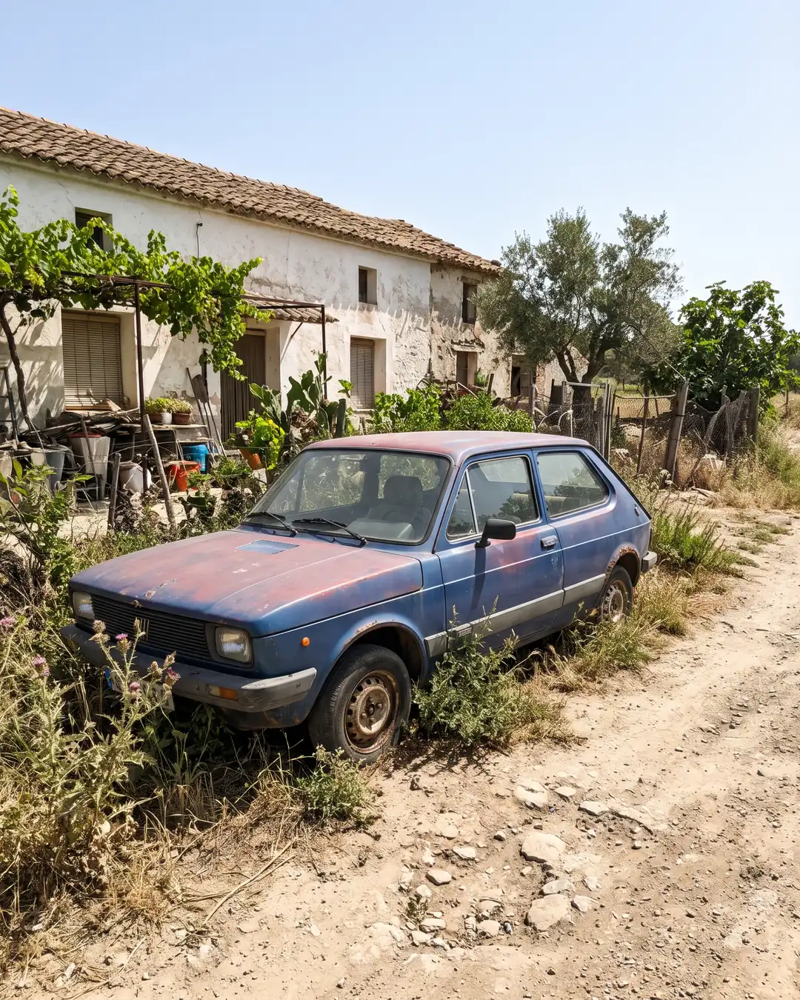
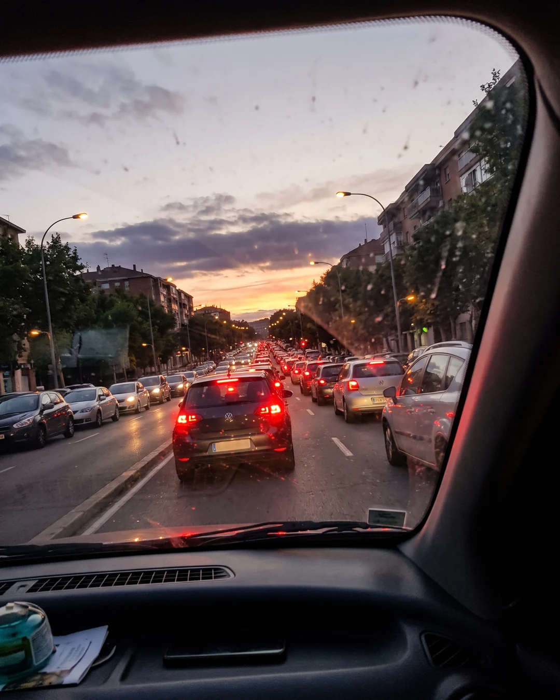

Case #9 · Cars
About this case
Case #9 is closed. It was the daily case for November 9, 2026 and its theme was Cars. The detectives of that day had two challenges: five images to judge as real photographs or AI-made pictures, and five one-sentence claims to judge as facts or fakes.
- AI-generated images: 2 of 5
- Fake claims: 2 of 5
Below you will find every answer. Each AI-generated image comes with the prompt that produced it, and each claim with the truth behind it and the details worth remembering, so you can check what you missed.
One of the fakes: “The world's longest car is a limousine just over 40 m (131 ft) long.” The truth: The record is The American Dream, a limousine of 30.54 m (100 ft) built in the United States in 1986 and restored in 2022.
Want to sharpen your eye? Read our guide to spotting AI images or our guide to spotting fake news, then play today's case.
Images
-
Image 1

AI
The suspect's confession
An old, faded car parked on a dirt road next to a country house, with tall weeds around the wheels; harsh midday light.
-
Image 2

AI
The suspect's confession
Traffic jam on an avenue at sunset, seen from the passenger seat through the windshield, with the brake lights of the cars ahead and a bit of dashboard reflection on the glass.
-
Image 3

REAL
Real photograph
-
Image 4
REAL
Real photograph
-
Image 5

REAL
Real photograph
Fact or Fake
-
Claim 1
FAKE “The world's longest car is a limousine just over 40 m (131 ft) long.”
The record is The American Dream, a limousine of 30.54 m (100 ft) built in the United States in 1986 and restored in 2022.
- It has 26 wheels, a water bed, a hot tub and even a helipad.
- It falls almost 10 m (33 ft) short of that figure.
-
Claim 2
FAKE “The most expensive car ever sold reached a price of 300 million euros.”
The most expensive is a 1955 Mercedes-Benz 300 SLR Uhlenhaut Coupé, sold in 2022 for 135 million euros.
- Auctioned privately by RM Sotheby's at the Mercedes-Benz Museum, Stuttgart.
- That is less than half of 300 million.
-
Claim 3
FACT “The absolute land speed record was set in October 1997.”
On October 15, 1997, Andy Green reached 1,227.98 km/h (763 mph) in the ThrustSSC in Nevada's Black Rock Desert.
- It is the only time a land vehicle has officially broken the sound barrier.
-
Claim 4
FACT “The first speeding ticket in history was for driving at just 13 km/h (8 mph).”
In 1896, Walter Arnold was fined in Kent, England, for driving about 13 km/h (8 mph) where the limit was 3.2 km/h (2 mph).
- The police officer had to chase him on a bicycle.
-
Claim 5
FACT “The record for distance driven by a single commercial vehicle tops 5 million km (3.1 million mi).”
American Irv Gordon passed 5.15 million km (3.2 million mi) in his Volvo 1800S, bought new in 1966.
- That is like going around the world more than 120 times.
- He did it before his death in 2018.